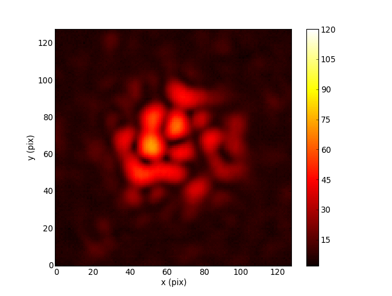
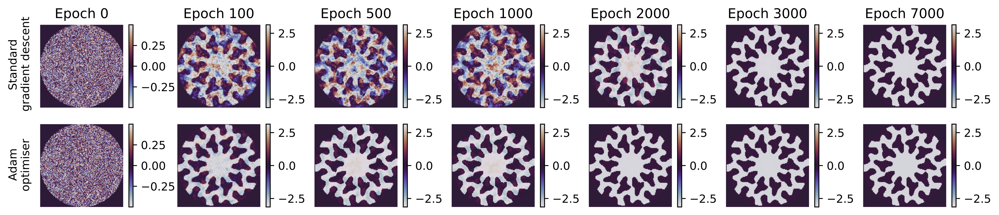

All Downhill from Here
What Automatic Differentiation can Do for Exoplanet Science
Benjamin Pope, NYU
benjaminpope.github.io/talks/nhfp20/nhfp20.html
Direct Imaging
We are starting to detect planets at the epoch of formation - eg the accreting protoplanets PDS 70 bc.

(ESO/A. Müller et al.)
The main limitation on direct imaging is from wavefront aberrations which corrupt phase information.

Correlate baselines around a triangle of receivers
JWST has an aperture masking instrument on NIRISS to obtain closure phases

Linearize response to phase noise: suitable for stable high Strehl images, with point-source calibrators
Separate out linear subspaces of Fourier components that are immune to phase noise vs susceptible
Every point source image gives you a free wavefront measurement in the instrument pupil!
Cophasing segmented mirror in the lab (Pope+2014)
Automatic Differentiation
What if we want to linearize an arbitrary optical system?
Optics is mathematically like machine learning: matrix multiplications and simple nonlinear functions
Can use automatic differentiation!
Autodiff is the enabling technology for deep neural networks - you use the chain rule to take derivatives of nearly-arbitrary numerical functions.
Implementations in TensorFlow, PyTorch, Julia native...
Here we use Google Jax, which resembles NumPy, to rewrite the Fourier/Fresnel optics code poppy to take derivatives
Jacobian of Palomar PHARO camera wrt phase

Differentiable optics also allows fast gradient descent for optical design - eg coronagraph pupils

Work by Louis Desdoigts - sensitivity of Toliman telescope design to Zernike modes

Work by Alison Wong - phase retrieval by gradient descent
